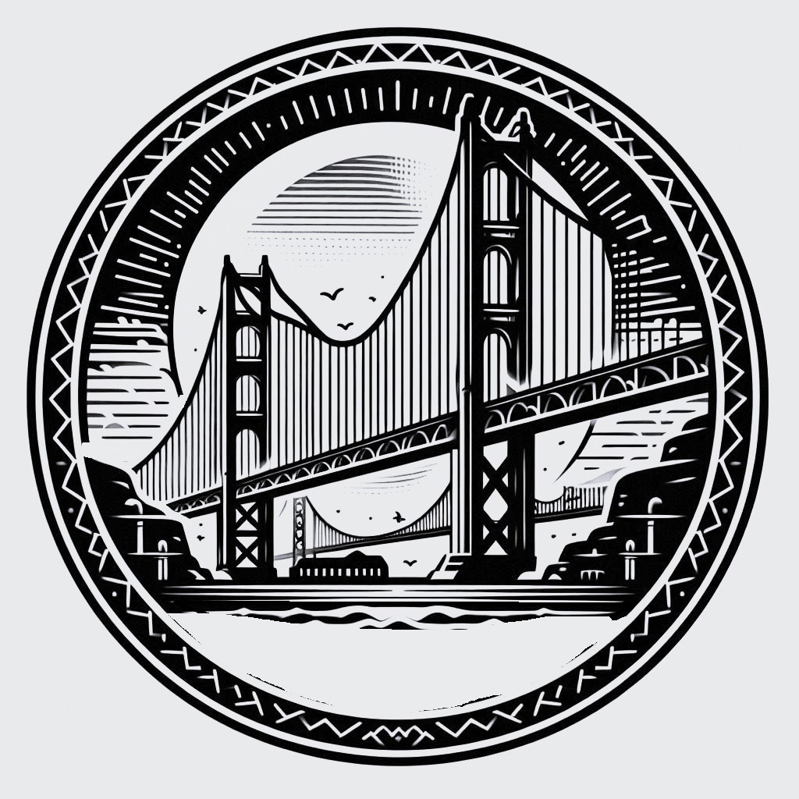

Prova 4: Presentació

Finalment, els participants hauran de construir el pont i presentar-lo davant del jurat. Es valorarà tant la presentació oral com la qualitat de la construcció realitzada.
Objectiu: Construir i presentar el pont, demostrant que compleix amb les especificacions i els requisits del concurs.